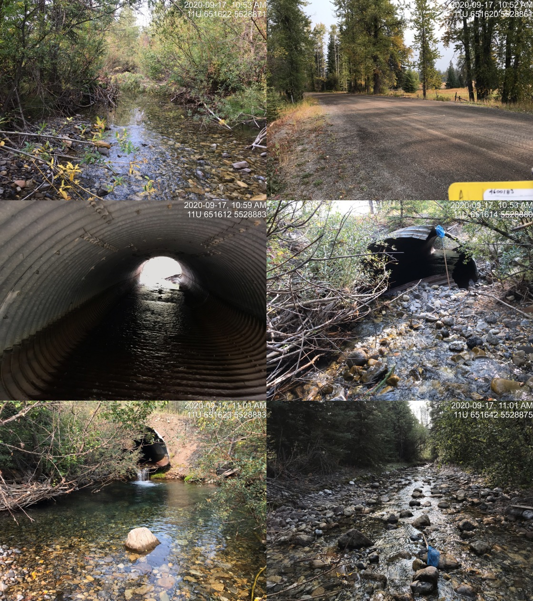
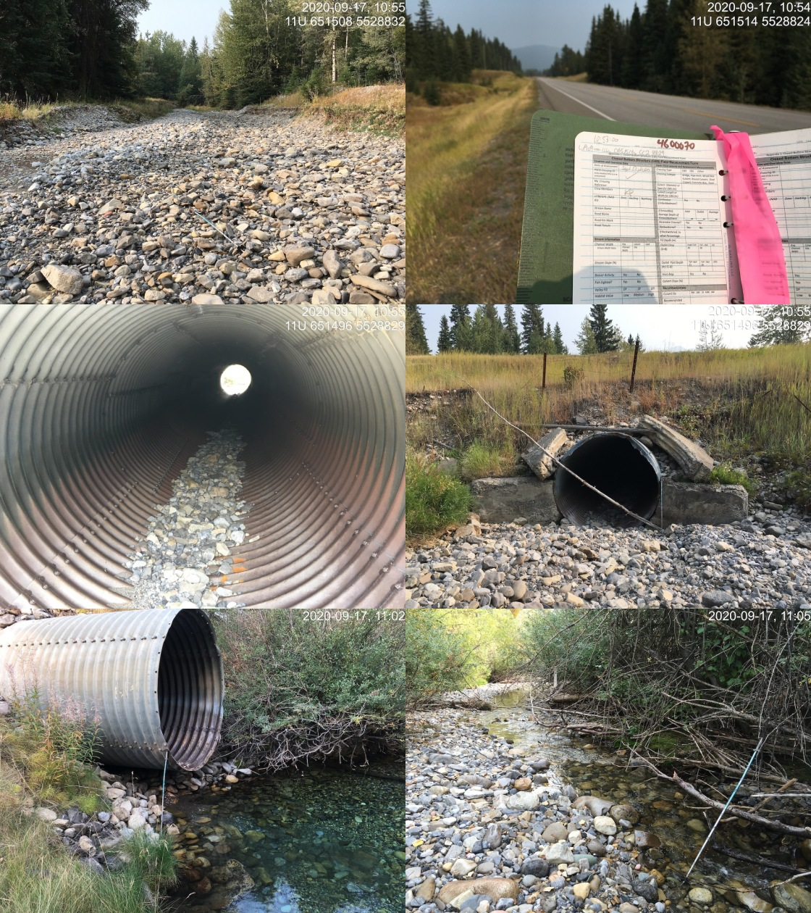

Appendix - Crossings 197533 and 197559
Busato Rd and Highway 43 - Brule Creek
Site Location
PSCIS crossings 197533 and 197559 are located north of Sparwood, BC on Brule Creek, approximately 600m and 725m upstream from the Elk River. During 2020 surveys, two fords (PSCIS 197535 and 197536) were documented 700m and 2km upstream of crossing 197559 respectively. Although several un-assessed crossings are modelled upstream of PSCIS 197536 (ford), review of aerial imagery indicates that the sole crossing upstream on the mainstem of Brule Creek is a bridge (modelled crossing 24706664) and the remaining upstream crossings are on small and/or very steep tributaries and unlikely to be blocking access to significant amounts of important habitat. Both Busato Road and Highway 43 are the responsibility of the Ministry of Transportation and Infrastructure.
Background
At the crossing locations, Brule Creek is a 5th order stream with a watershed area upstream of the highway of approximately 87km2. The elevation of the watershed ranges from a maximum of 2800 to 1200m at PSCIS crossing 197533. Brule Creek is known to contain westslope cutthrout trout, rainbow trout and bull trout downstream of the subject culverts and westslope cutthrout trout and rainbow trout above (MoE 2020b). On the south side of the upper watershed, at an elevation of 2000m, is the 5ha Josephine Lake (also known as Big Lake). The lake was stocked with westslope cutthrout trout from 1983 - 2000 (MoE 2020b; “Fish Inventories Data Queries” 2020).
PSCIS stream crossings 197533 and 197559 were ranked as high priorities for follow up with fish passage assessments and habitat confirmations due to the large size of the stream network upstream (37km) of the highway and because Brule Creek is a 5th order stream. The habitat confirmation was completed on September 17, 2020. A map of the watershed including areas surveyed is provided in Attachment 1 – Map 082G.123.
Stream Characteristics at Crossing
At the time of the survey, both culverts were un-embedded, non-backwatered and considered barriers to upstream fish passage. PSCIS crossing 197533 was 3.3m in diameter with a pipe length of 20m, a culvert slope of 4%, a stream width ratio of 2.2 and an outlet drop of 0.7m (Table 5.26). PSCIS crossing 197559 was 2.5m in diameter with a pipe length of 35m, a culvert slope of 2.5%, a stream width ratio of 2.4 and an outlet drop of 0m (Table 5.27). Water temperature was 6\(^\circ\)C, pH was 7.5 and conductivity was 337uS/cm.
Stream Characteristics Downstream of 197533
The stream was surveyed downstream from the culvert for 400m. Overall, total cover amount was rated as moderate with small woody debris dominant. Cover was also present as large woody debris and overhanging vegetation (Table 5.28, Figure 5.27). The average channel width was 7.4m, the average wetted width was 4.1m and the average gradient was 1.9%. The dominant substrate was cobbles with boulders subdominant. In the area surveyed, the stream channel appeared to be anthropogenically channelized and straightened with influence of adjacent livestock grazing/access negatively impacting stream banks due to loss of riparian vegetation and erosion. Habitat was rated as medium as it was considered an important migration corridor with moderate value habitat for fry/juvenile salmonid rearing.
Stream Characteristics Upstream of 197533 and Downstream of 197559
The stream was surveyed upstream from 197533 for 125m to 197559. Overall, total cover amount was rated as moderate with dominant. Cover was also present as (Table 5.28, Figure 5.28). The average channel width was 5.5m, the average wetted width was 3.8m and the average gradient was 1.5%. There was a large pool at the outlet of crossing 197559 containing approximately nine westslope cutthrout trout with lengths of five of the fish estimated at 200mm and four at 300mm (Figure 5.29). The outlet pool was depth was >1m with gravels suitable for spawning at the tailout. Habitat value was rated as high for resident and fluvial salmonid rearing and spawning.
Stream Characteristics Upstream of 197559
The stream was surveyed immediately upstream from 197559 for 1200m and then another 600m beginning at the ford (PSCIS 197536) 2km upstream for a total of 1600m. The channel was dewatered immediately upstream of Highway 43 with intermittent pools only to a distance approximately 670 m upstream. Upstream of the dewatered area, stream flows increased with increasing upstream distance. Overall, total cover amount was rated as moderate with deep pools dominant. Cover was also present as boulders and undercut banks (Table 5.28, Figure 5.28). The average channel width was 5.5m, the average wetted width was 2.3m and the average gradient was 3.5%. Overall, habitat upstream of 197559 was rated as high value habitat present suitable for resident and fluvial salmonid rearing and spawning.
Fish Sampling
To assess potential impacts of the culvert on fisheries values in the stream, electrofishing was conducted upstream of the crossing. Sampling was not conducted downstream of crossing 197559 as bull trout presence was suspected and it was determined that spawners and/or eggs may have been present. One site was sampled upstream with no fish captured (Figure 5.15). Raw results are included in digital format as Attachment 2 and summarized in Table 5.29.
Structure Remediation and Cost Estimate
As properties on Busato Road could be accessed from either side of the road, removal of PSCIS 197533 could be explored as an option for providing access to the 125m of habitat located upstream and below PSCIS 197533. However, to facilitate an estimate of “worst case scenario”, costs for replacement of both crossing 197533 and 197533 with bridges are estimated at $710000 and $3050000 respectively. The combined cost benefit of replacements are estimated at $7700/linear m and $23600/m2.
Conclusion
There is 0.1km of habitat upstream of crossing 197559 and another 23km upstream of 197559 rated as high value for resident and fluvial salmonid rearing/spawning. The lack of fish captured upstream of the crossing is not an indication of a lack of fish presence but may be indicative of low population densities and/or restricted access due to downstream culverts and dewatering. Although an interim ranking for remediation at the crossings was assessed as high priority to proceeding to designs for both crossings, follow up to determine the extent of dewatering during higher flow periods is recommended. Although unconfirmed at the time of reporting, the 670m section of stream located immediately upstream of Highway 43 that was flowing subsurface at the time of the survey, very likely flows above ground during high and peak flows when adult westslope cutthrout trout display a general pattern of upstream movement to spawning areas (Schweigert et al. 2017).
| Location and Stream Data |
|
Crossing Characteristics | – |
|---|---|---|---|
| Date | 2020-09-17 | Crossing Sub Type | Oval Culvert |
| PSCIS ID | 197533 | Diameter (m) | 3.3 |
| External ID | NA | Length (m) | 20 |
| Crew | AI, KP | Embedded | No |
| UTM Zone | 11 | Depth Embedded (m) | NA |
| Easting | 651626 | Resemble Channel | No |
| Northing | 5528888 | Backwatered | No |
| Stream | Brule Creek | Percent Backwatered | NA |
| Road | Busato Rd | Fill Depth (m) | 1 |
| Road Tenure | MoTi local | Outlet Drop (m) | 0.7 |
| Channel Width (m) | 7.1 | Outlet Pool Depth (m) | 1.5 |
| Stream Slope (%) | 2 | Inlet Drop | Yes |
| Beaver Activity | No | Slope (%) | 4 |
| Habitat Value | High | Valley Fill | Deep Fill |
| Photos:  |
| Location and Stream Data |
|
Crossing Characteristics | – |
|---|---|---|---|
| Date | 2020-09-17 | Crossing Sub Type | Round Culvert |
| PSCIS ID | 197559 | Diameter (m) | 2.5 |
| External ID | NA | Length (m) | 35 |
| Crew | KP, AI | Embedded | Yes |
| UTM Zone | 11 | Depth Embedded (m) | 0.05 |
| Easting | 651516 | Resemble Channel | Yes |
| Northing | 5528829 | Backwatered | No |
| Stream | Brule Creek | Percent Backwatered | NA |
| Road | Highway 43 | Fill Depth (m) | 3 |
| Road Tenure | MoTi highway | Outlet Drop (m) | 0 |
| Channel Width (m) | 6.1 | Outlet Pool Depth (m) | 1.7 |
| Stream Slope (%) | 1.5 | Inlet Drop | No |
| Beaver Activity | No | Slope (%) | 2.5 |
| Habitat Value | Medium | Valley Fill | Deep Fill |
| Photos:  |
| Site | Location | Length Surveyed (m) | Channel Width (m) | Wetted Width (m) | Pool Depth (m) | Gradient (%) | Total Cover | Habitat Value |
|---|---|---|---|---|---|---|---|---|
| 197533 | Upstream | 125 | 5.5 | 3.8 |
|
1.5 | moderate | high |
| 197533 | Downstream | 400 | 7.4 | 4.1 |
|
1.9 | moderate | medium |
| 197559 | Upstream | 1600 | 7.7 | 2.3 | 0.6 | 3.5 | moderate | high |
| Site | Location | Width (m) | Length (m) | Area (m2) | Effort (s) | Effort (s/m2) |
|---|---|---|---|---|---|---|
| 6 | Upstream | 5.1 | 200 | 1020 | 233 | 0.2 |
Figure 5.27: Typical habitat downstream of PSCIS crossing 197533.
Figure 5.28: Typical habitat upstream of PSCIS crossing 197533 and downstream of PSCIS crossing 197533.
Figure 5.29: Westlope cutthrout trout in outlet pool downstream of PSCIS crossing 197559.
Figure 5.30: Subsurface flow area upstream of PSCIS crossing 197559.

Figure 5.31: Typical habitat above dewatered area upstream of PSCIS crossing 197533.
Figure 5.32: Habitat within electrofishing site upstream of PSCIS crossing 197533.